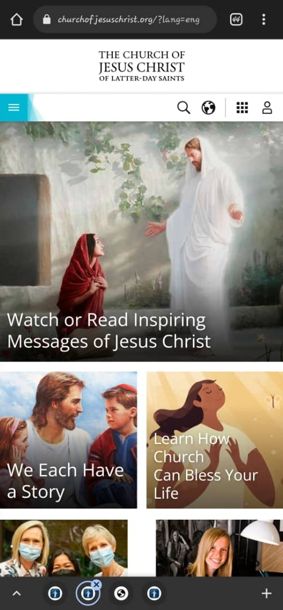

Contrast
GitHub.com
The choice of colors for the GitHub website is what attracted me to the website. While featuring a dark image as the backgorund, the other elements on the page are depicted with lighter and beautiful color. This in turn gives the website a very cool yet professional contrast. Making it easy for users to be attracted to it and even want to explore the website
Proximity
Coursera.org
The Coursera website is a perfect example of a website that practices good proximity. The elements on the websites are placed equally around each other with adequate distance around each of the elements. Also, there is enough spacing around each and sections of the website giving the overall website a wonderful and professional appearance. This look makes it easy for any user to easily interact with the website.
alignment
churchofjeuschrist.org
The Church of Jesus Christ website is another website that practices good alignment. Each elements on the website are well positioned relative to the entire website. I also observed that each elements on the website are well padded and well margine giving the overall website a wonderful and refreshing look. This look makes it easy for any user to easily interact with the website